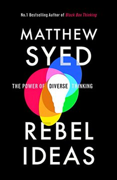
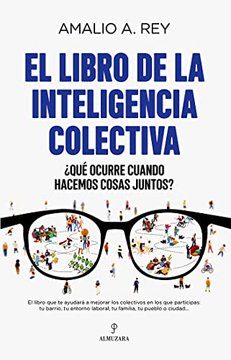
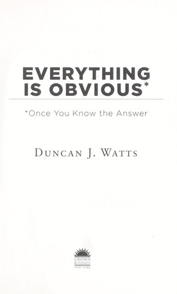
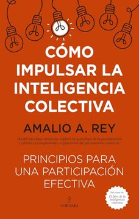
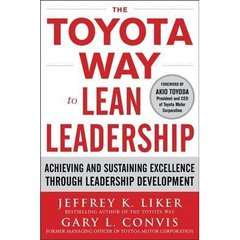

Módulo 04 / Apartado 5 de 5
Pensar entre varios sin que salga peor
Diversidad cognitiva, que no es la de la foto de la memoria anual. La ceguera colectiva de Syed, las cuatro condiciones de Surowiecki, catorce mil personas en ocho mundos paralelos y el coste real —que existe— de tener un equipo que piensa distinto.
Dos cosas que se llaman igual y no lo son
Cuando en una empresa se habla de diversidad, casi siempre se está hablando de diversidad demográfica: sexo, edad, origen, discapacidad. Es un tema legítimo, tiene su literatura y sus razones, y no es el tema de este apartado.
Lo que hace que un equipo resuelva mejor un problema es la diversidad cognitiva: que la gente piense distinto. Distintos modelos mentales, distintas heurísticas, distintos oficios de origen, distintas maneras de mirar la misma pantalla. Y las dos cosas están relacionadas —a veces mucho— pero no son la misma, y confundirlas lleva a fracasos por los dos lados.
Fallo A: montas un equipo demográficamente variadísimo cuyos miembros han estudiado todos lo mismo, en escuelas parecidas, y han trabajado todos en consultoría. Cognitivamente es un equipo de clones. Queda muy bien en la foto y resuelve como una sola persona.
Fallo B: dices que solo te importa «el talento» y contratas por afinidad, que es lo que hace el cerebro cuando le dejas. Acabas con doce señores del mismo barrio intelectual. También es un equipo de clones, y encima este cree que es una meritocracia.
Syed: la ceguera colectiva
Matthew Syed es periodista británico y ex jugador olímpico de tenis de mesa. Rebel Ideas (2019) es el libro que Recuenco señala como imprescindible al final de la turra de diversidad, y su aportación es una imagen que se te queda pegada.
Syed dice: piensa en un problema como en un territorio. Lo que cada persona sabe es un círculo que cubre un trozo de ese territorio. Un equipo de gente muy lista y muy parecida apila círculos en el mismo sitio: mucho grosor, y territorio sin cubrir alrededor que nadie ve y que nadie sabe que no ve. A eso lo llama ceguera colectiva.
El caso con el que Syed abre el libro es la CIA antes del 11 de septiembre. Una agencia que contrataba, década tras década, un perfil extraordinariamente uniforme: hombres blancos, anglosajones, protestantes, de clase media, salidos de las mismas universidades. Individualmente, gente brillantísima.
Y con ese filtro puesto, había información que estaba encima de la mesa y no significaba nada para nadie. Un tipo en una cueva declarando la guerra santa a Estados Unidos, sin ejército ni estado, se leía como folclore. Hacía falta alguien con otro marco cultural para leer eso como lo que era. No faltaban datos: faltaban lectores.
Y aquí está la conexión con el módulo entero. Esto es exactamente el sensemaking del apartado 1 fallando a escala de organización: la propiedad de las «pistas extraídas» dice que montas la película con unos pocos detalles. Si todos los que extraen pistas tienen el mismo repertorio, extraen las mismas y descartan las mismas. Y como coinciden, se confirman entre ellos.

El libro de esto Rebel Ideas: The Power of Diverse ThinkingEl libro de la ceguera colectiva. Va de la CIA a la dieta a los equipos de escalada del Everest en el 96, y su tesis es que la diversidad cognitiva no es una concesión moral sino una capacidad de resolución medible. Recuenco lo cierra la turra diciendo que es un imprescindible sobre estos temas — Matthew Syed · 2019
Que haya varios no basta: las condiciones
Ahora la mala noticia. Juntar gente distinta no produce inteligencia colectiva automáticamente. Produce reuniones. Un grupo puede rendir por debajo de su peor miembro con una facilidad pasmosa, y de hecho es lo normal.
El punto de partida clásico es de James Surowiecki, que en 2004 recuperó un experimento delicioso de Francis Galton: en una feria de ganado de 1906, ochocientas personas apostaron cuánto pesaba un buey. Ninguna acertó. La mediana de todas las apuestas se quedó a menos de un uno por ciento del peso real.
Pero Surowiecki dice también bajo qué condiciones pasa eso, y son cuatro. Si falta una, la multitud no es sabia: es una multitud.
Que cada uno tenga información privada, aunque sea una interpretación rara de los hechos conocidos.
Que la opinión de cada uno no esté determinada por la de los demás. Es la que se rompe primero y la que rompen todas las reuniones: en cuanto habla el jefe, se acabó la independencia.
Que la gente pueda especializarse y sacar conocimiento de su contexto local, en vez de todos mirando el mismo informe.
Que exista un mecanismo para convertir todos los juicios privados en una decisión colectiva. Sin esto solo tienes opiniones sueltas y una discusión sin final.
La versión en español, y la que Recuenco quiere estudiar explícitamente para el trabajo de acción civil que trae entre manos, es la de Amalio Rey. En la turra dice, con todas las letras: «quiero examinar la inteligencia colectiva de @arey; quiero ver cómo vertebrar una causa civil».

El libro de esto El libro de la Inteligencia colectivaEl manual en castellano de la inteligencia colectiva: sus principios, sus condiciones y las trampas que la matan. Es el que rellena el hueco de «técnicas grupales» que la guía docente pide y las turras no desarrollan. Rey tiene un segundo volumen, Cómo impulsar la inteligencia colectiva, más operativo, que el corpus también enlaza — Amalio A. Rey · 2021
La prueba de que el grupo no es sabio por defecto
Hay un experimento que conviene conocer porque desarma de golpe la idea de que el éxito colectivo mide calidad. Lo diseñaron Matthew Salganik, Peter Dodds y Duncan Watts, y se publicó en Science en 2006.
La lectura para nosotros no es «el mercado es injusto». Es más incómoda: en cuanto hay influencia social, el resultado colectivo deja de ser una medición y pasa a ser una historia. Y las historias tienen mucho de accidente inicial amplificado.
Trasládalo a tu comité: la primera opinión que se dice en voz alta hace de «contador de descargas» para todas las siguientes. Por eso la condición de independencia es la que hay que proteger a martillazos, y por eso las técnicas que valen la pena —voto privado antes de discutir, escritura antes de hablar, abogado del diablo asignado— son todas maneras de retrasar el momento en que el grupo se entera de lo que piensa el grupo.

El libro de esto Everything is Obvious: Once You Know the AnswerEl libro donde Watts cuenta el experimento de arriba y desmonta el sentido común como herramienta de análisis. Su tesis: las explicaciones de por qué algo triunfó se construyen después y siempre suenan convincentes, lo que las hace inútiles para predecir. Es la vacuna que hay que ponerse antes de tocar cualquier análisis causal, o sea, antes del módulo 5 — Duncan J. Watts · 2011
La turra: el coste que nadie quiere pagar
La turra de diversidad de Recuenco tiene el mérito raro de empezar con un descargo honesto —dice que no es especialista en diversidad clásica, que no tiene track record y que ni siquiera le interesaba especialmente— y acabar con la frase más dura y más útil del asunto.
Esto no se hace porque sencillamente no estamos dispuestos a invertir el coste adicional de orquestación cognitiva que demanda tener un equipo diverso.
Eso es lo que casi nadie dice. Un equipo diverso es más caro de operar. Las reuniones duran más, hay que traducir entre jergas, aparecen fricciones que en un equipo de clones no existirían, y el rendimiento a corto plazo es peor. La diversidad cognitiva no es gratis: es una inversión con un coste de operación permanente que se llama orquestación, y a la que dedicamos el módulo 6 entero.
Y de ahí sale su detector de teatro. Recuenco enumera las señales de incoherencia que delatan a una empresa que hace diversidad de escaparate, y son preguntas que puedes hacer mañana:
- La pregunta del manager
- Queremos gente diversa en los equipos, pero ¿la queremos de jefe? La mayoría de organizaciones aprueban lo primero y suspenden lo segundo sin darse cuenta.
- La pregunta del departamento
- ¿Dirige el área de talento y diversidad una persona diversa? ¿Hay perfiles diversos en la dirección de recursos humanos, que es quien filtra a todos los demás?
- La pregunta del incentivo
- ¿Por qué hace falta una subvención para que contraten a alguien diverso? Si de verdad rinde mejor, el incentivo sobra. Que haga falta dice algo sobre lo que la empresa cree de verdad.
Recuenco dice que él practica el Genchi Genbutsu a muerte. Es un principio del sistema de producción de Toyota y significa literalmente «el sitio real, la cosa real»: si hay un problema en la línea, no lo estudias por informe, vas y lo miras con tus ojos. Nadie decide sobre lo que no ha ido a ver.
Es el principio 3 de las HRO del apartado anterior —sensibilidad a la operación— con nombre japonés y cincuenta años de rodaje. Volverá a aparecer en el módulo 5, porque toda la escuela de calidad japonesa cuelga de ahí.
Y una advertencia final que la turra pone con una metáfora de tebeo: Pícara, la de la Patrulla X, absorbe los poderes y recuerdos de quien toca, y por eso pierde la cabeza. El que se mete dentro de una organización para entenderla corre exactamente ese riesgo: adoptar sus sesgos como propios. Hay que meterse debajo de la piel y a la vez conservar la distancia. Es la «actitud de sabiduría» de Weick otra vez: confiar y dudar al mismo tiempo.
Cuando la diversidad cognitiva tiene nombre
Hasta aquí hemos hablado de diversidad cognitiva en abstracto: gente que piensa distinto. En 2026 Recuenco le dedicó dos hilos a la versión concreta y espinosa del asunto, la neurodivergencia, y conviene traerlos porque cambian el tono de todo lo anterior.
Neurodivergencia engloba autismo, TDAH, dislexia, altas capacidades y sus combinaciones —lo que se llama doble o triple excepcionalidad—. No es una enfermedad ni un diagnóstico único: es un paraguas para decir que hay cerebros que procesan de otra manera.
Y un aviso que el propio Recuenco pone al principio de su hilo: usa «autista» de forma deliberadamente laxa, apoyándose en una tipología ajena, y avisa de que no está haciendo clínica. Aquí se respeta ese matiz. Cuando más abajo aparecen nombres propios, lo que hay son declaraciones públicas de los interesados o lecturas de perfil hechas desde fuera, y las dos cosas se distinguen.
Su tesis es que en el cruce entre rasgos autistas y altas capacidades aparece un perfil que no es patología sino ventaja adaptativa en entornos de alta complejidad: hiperfoco, sistematización extrema, pensamiento no lineal, poca necesidad de validación social y tolerancia nula al ruido cognitivo que no aporta.
Y hace una distinción que es la parte más útil del hilo, porque deshace una confusión que sale cara en las organizaciones:
A partir de ahí el hilo recorre nombres del sector tecnológico. Conviene separar lo que es declaración propia de lo que es lectura ajena: Elon Musk declaró tener Asperger al presentar Saturday Night Live en 2021; Mark Zuckerberg mencionó en 2013 tener «una forma leve de autismo»; Sam Altman, preguntado por ello en 2016, describió el fenotipo sin ponerse la etiqueta. De Dario Amodei no hay declaración alguna: ahí lo que hay es una lectura de perfil, y Recuenco lo dice.
Su conclusión —y su eslogan, que lleva popularizando desde 2024 y que insiste en que no es peyorativo sino «una advertencia reverencial»— es «Fear the Autist»: estos perfiles, que en la era previa a internet quedaban marginados, hoy tienen una ventaja enorme en entornos digitales, y patologizarlos o ignorarlos sale caro.
Y una nota de pasada que vale oro para el módulo 6. Al final del hilo reconoce que entre esos perfiles «lo de la orquestación cognitiva lo suelen llevar un poco regular». Es decir: la misma característica que los hace excepcionales resolviendo los hace difíciles de coordinar. Que es exactamente el problema del equipo Apolo, y por eso el coste de orquestación del que hablábamos arriba no es retórico.
Y qué se hace con eso: ¿Xavier o Magneto?
El segundo hilo es el interesante de verdad, porque plantea la pregunta política que todo lo anterior deja abierta. Y la plantea con la Patrulla X, que para esto funciona mejor que cualquier marco académico.
Él se coloca en la esquina de Xavier y explica por qué desde la biografía: cuenta su propia infancia de niño superdotado —aislamiento, acoso, incomprensión en la escuela y en casa— y dice que su historia es «la de Xavier sin la mansión», un mutante que tuvo que sobrevivir solo. De ahí sale su postura reformista: mejorar el sistema educativo para que esos perfiles se detecten y se acompañen, en vez de patologizarse o ignorarse.
Y en la esquina contraria pone a Peter Thiel y Alex Karp, de Palantir, con hechos concretos: Thiel lleva años sosteniendo que muchos fundadores de éxito tienen rasgos de Asperger y que eso es ventaja competitiva —quien no tiene el reflejo de imitar socialmente no obedece las normas que frenan la innovación—. Karp, disléxico declarado, ha ido más lejos y ha impulsado un programa de captación específico de talento neurodivergente en su empresa; no como política de inclusión, sino como ventaja estratégica.
Hay un dato de su hilo de mayo de 2026 que conviene tener a mano cuando se habla de «encaje cultural». Dice que un cerebro atípico gasta buena parte de su capacidad diaria en camuflarse —en parecer normal en la oficina— y que lo que le queda para resolver problemas es el resto. Su cifra, dicha a ojo: en torno al 80% en camuflarse y un 20% para lo demás.
No hay estudio detrás de ese reparto y él tampoco lo presenta como tal, pero el fenómeno sí está descrito y tiene nombre en la literatura de autismo. Y la conclusión organizativa aguanta sin necesidad del número: si contratas a alguien por cómo piensa y luego le pides que lo disimule, estás pagando por una capacidad que has decidido gastar en otra cosa.
De ahí su lectura del culture fit, que es dura y reconocible: en la práctica suele significar «que no haga preguntas difíciles, que no cuestione la ineficiencia y que se ría de los chistes internos».
Por qué esto cierra el módulo y no es una digresión. Todo el apartado ha defendido que la diversidad cognitiva es capacidad de resolución. Estos dos hilos enseñan la factura: quien decide que la diferencia es una ventaja tiene que decidir después qué hace con ella. Puede ampliar la mesa o puede montar la suya aparte. Y las dos opciones tienen consecuencias, incluso cuando la respuesta técnica es la misma.
Fuentes de este apartado
Las turras de las que sale
Posterior al corte del Turrero Post. Describe el perfil autismo más altas capacidades como ventaja adaptativa en complejidad, separa con precisión los rasgos autistas de la psicopatía, y repasa declaraciones públicas de varios fundadores del sector tecnológico. De aquí sale su eslogan «Fear the Autist» y, casi de pasada, el reconocimiento de que a estos perfiles la orquestación cognitiva se les da regular.
solo en X Xavier contra MagnetoTurra · 53 tweets · 2 may 2026Posterior al corte, y el más personal de los dos. Usa la dicotomía de la Patrulla X para contraponer dos maneras de responder a la neurodivergencia: la integracionista, en la que se coloca él contando su propia infancia, y la confrontacional que atribuye a Thiel y Karp. Es también la puerta de entrada al arco de seis hilos que dedicó a la educación en 2026.
Diversidad auténtica: cómo la comprendemos y la gestionamos de verdadTurra · 48 tweets · jul 2023La turra de este apartado. Empieza con un descargo honesto sobre su falta de credenciales en el tema, cuenta el caso real de una empresa cliente y la agencia de talento diverso que salió de ahí, y remata con la distinción entre diversidad periférica y diversidad cognitiva, el catálogo de señales de teatro y el coste de orquestación. También es donde suelta lo del Genchi Genbutsu y lo de Pícara.
Corrientes subterráneas: qué hace falta para hacer cosas desde la sociedad civilTurra · feb 2025De aquí salen los dos libros de Amalio Rey. Es una turra sobre acción civil organizada —a raíz del trabajo de Jaime Gómez-Obregón con datos públicos— y sobre por qué hace falta orquestar mil cosas para que una iniciativa ciudadana no se quede en voluntarismo. Recuenco dice ahí que quiere estudiar la inteligencia colectiva de Rey para entender por qué estas cosas triunfan o fracasan.
Los libros
La ceguera colectiva, con la CIA, el Everest del 96 y unos cuantos casos más. Es el libro que da el argumento de que la diversidad cognitiva es capacidad de resolución y no política de recursos humanos, que es exactamente como lo usa el temario. Se lee rápido y las historias son buenas.
El libro de la Inteligencia colectivaAmalio A. Rey · 2021El manual en castellano, y el que tapa el agujero de «técnicas de creatividad grupal» que la guía docente pide. Recuenco lo enlaza como «el libro de mi pana @arey» y dice explícitamente que quiere examinarlo para el trabajo de acción civil. Si buscas las dinámicas concretas para una sesión de grupo, están aquí y no en las turras.

Cómo impulsar la inteligencia colectivaAmalio A. Rey · 2024La continuación, más operativa que el anterior. El corpus enlaza los dos en la misma turra. Si el primero explica por qué la inteligencia colectiva falla, este va a cómo montar los procesos para que no falle.
Everything is Obvious: Once You Know the AnswerDuncan J. Watts · 2011El experimento de las catorce mil personas y la demolición del sentido común como herramienta de análisis. En el corpus aparece enlazado desde la turra de la hipocresía, que va de otra cosa, pero el libro es exactamente lo que hay que leer antes de empezar a explicar por qué pasó algo. Es la vacuna contra el sesgo retrospectivo.

The Toyota Way to Lean LeadershipJeffrey Liker y Gary Convis · 2011Aquí solo por el Genchi Genbutsu, que es donde se explica bien. Es también la puerta de entrada al módulo siguiente: Ishikawa, los cinco porqués y las ocho disciplinas salen todos de este linaje industrial japonés, y conviene saber de dónde vienen antes de usarlos.